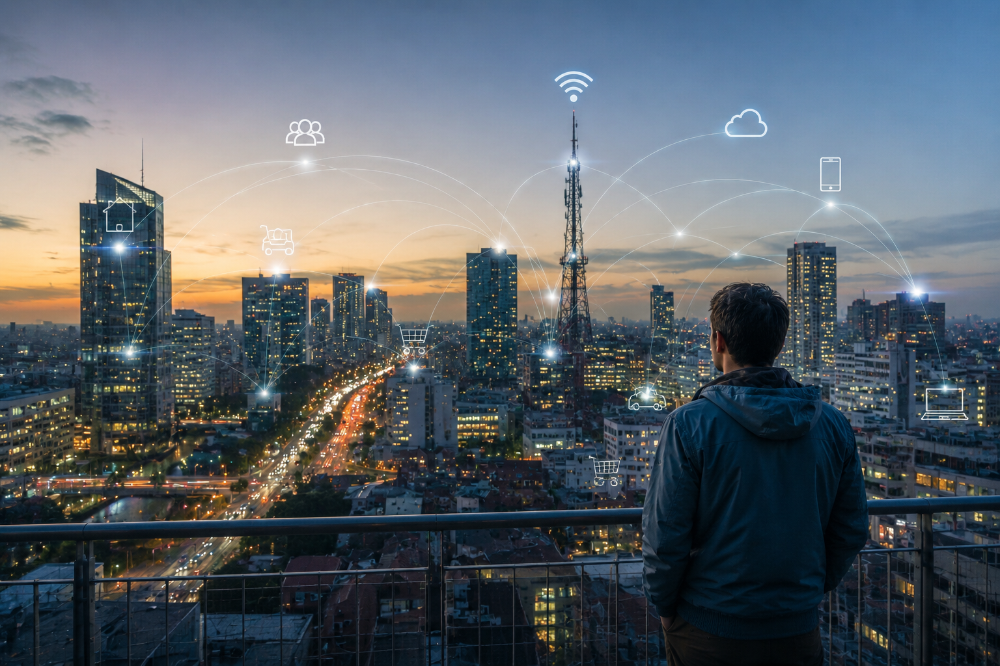

O futuro da tecnologia é promissor, com avanços constantes em áreas como inteligência artificial, computação quântica e biotecnologia. A inovação tecnológica tem o potencial de transformar a maneira como vivemos, trabalhamos e nos relacionamos. No entanto, é importante considerar os impactos éticos e sociais dessas tecnologias para garantir um futuro sustentável e inclusivo.
"O futuro pertence àqueles que acreditam na beleza de seus sonhos." - Eleanor RooseveltA tecnologia tem o poder de revolucionar a forma como vivemos, trabalhamos e nos comunicamos. Com avanços constantes em áreas como inteligência artificial, realidade virtual e biotecnologia, o futuro da tecnologia é promissor. No entanto, é importante considerar os impactos éticos e sociais dessas inovações para garantir um futuro sustentável e inclusivo.
"A tecnologia é melhor quando reúne as pessoas." - Matt MullenwegA tecnologia tem o potencial de transformar a sociedade, impulsionando avanços em áreas como saúde, educação e meio ambiente. Com o desenvolvimento de inteligência artificial, computação quântica e biotecnologia, o futuro da tecnologia é promissor. No entanto, é crucial abordar os desafios éticos e sociais associados a essas inovações para garantir um futuro sustentável e inclusivo para todos.
"A tecnologia é uma ferramenta, não um destino." - Unknown